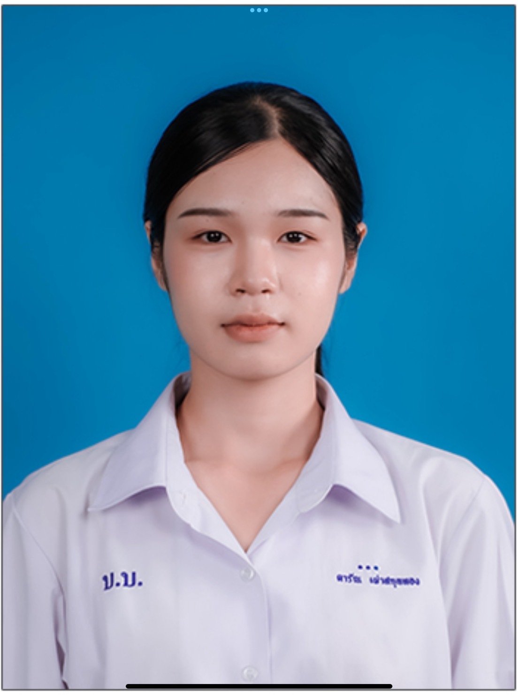
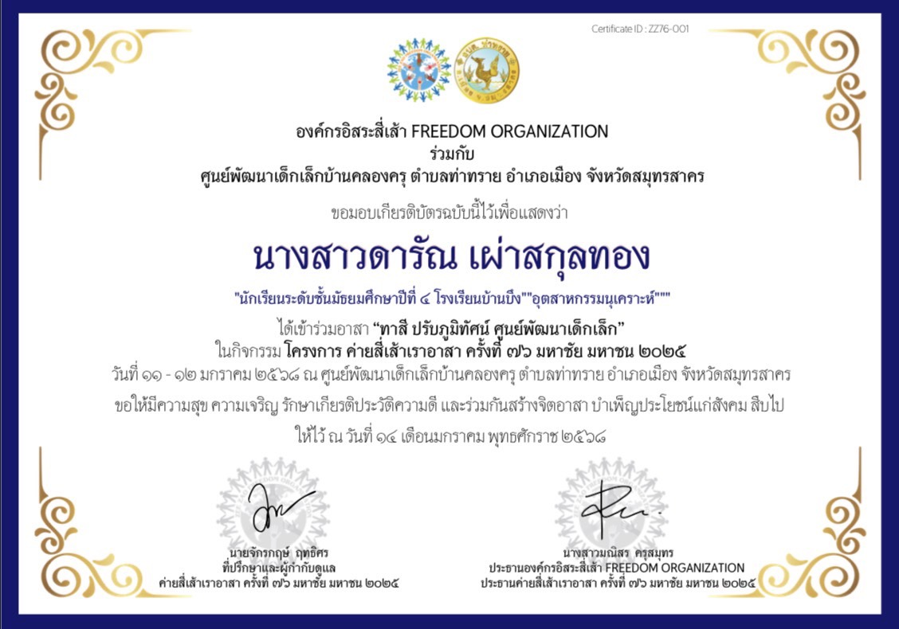

📖 คำนำ
แฟ้มสะสมผลงานเล่มนี้จัดทำขึ้นเพื่อรวบรวมประวัติ ความรู้ ความสามารถ กิจกรรม และผลงานต่าง ๆ ที่ได้เรียนรู้และสร้างสรรค์ขึ้นในช่วงที่ผ่านมา
ฉันมีความสนใจด้านการออกแบบและสถาปัตยกรรม ชอบการออกแบบสิ่งต่าง ๆ และการคิดสร้างสรรค์ รวมถึงต้องการพัฒนาทักษะของตนเองอย่างต่อเนื่อง
ฉันหวังว่าแฟ้มสะสมผลงานนี้จะช่วยแสดงให้เห็นถึง ความตั้งใจ ความสามารถ และพัฒนาการของฉัน รวมถึงความสนใจที่มีต่อการเรียนด้านสถาปัตยกรรม
💗 ขอบคุณที่เข้ามาชม Portfolio ของฉัน 💗
👩🏻🎨 แนะนำตัว

ชื่อ: นางสาว ดารัณ เผ่าสกุลทอง
ชื่อเล่น: ดารัณ
ระดับการศึกษา: มัธยมศึกษาปีที่ 6
แผนการเรียน: เตรียมวิศวกรรมศาสตร์
💗 ความสนใจ
ฉันมีความสนใจด้านการออกแบบและสถาปัตยกรรม ชอบการออกแบบสิ่งต่าง ๆ และการคิดสร้างสรรค์ รวมถึงต้องการพัฒนาทักษะของตนเองอย่างต่อเนื่อง
🎯 เป้าหมายของฉัน
เป้าหมายของฉันคือการได้ศึกษาต่อในคณะสถาปัตยกรรมศาสตร์ และพัฒนาความรู้ความสามารถด้านการออกแบบ เพื่อเติบโตไปเป็นสถาปนิกที่สามารถออกแบบอาคาร และพื้นที่ต่าง ๆ ให้มีความสวยงาม ใช้งานได้จริง และตอบโจทย์ความต้องการของผู้ใช้งาน
🎓 รายละเอียดการศึกษา
📚 การศึกษาปัจจุบัน
ระดับ: มัธยมศึกษาปีที่ 6
แผนการเรียน: เตรียมวิศวกรรมศาสตร์
💡 สิ่งที่ได้จากการเรียน
การเรียนในระดับมัธยมศึกษาทำให้ฉันได้ฝึกทั้งด้านความรู้ การคิดวิเคราะห์ การแก้ปัญหา และการทำงานอย่างเป็นระบบ รวมถึงได้เรียนรู้การทำงานร่วมกับผู้อื่น
นอกจากนี้ยังได้ฝึกความรับผิดชอบและการจัดการเวลา ซึ่งเป็นสิ่งสำคัญสำหรับการเรียนต่อในระดับมหาวิทยาลัย
🌷 ทักษะที่ต้องการพัฒนา
- การออกแบบ
- ความคิดสร้างสรรค์
- การคิดวิเคราะห์
- การแก้ไขปัญหา
- การวางแผนการทำงาน
- การทำงานร่วมกับผู้อื่น
🏛️ มหาวิทยาลัยที่อยากเข้า
🎓 คณะสถาปัตยกรรมศาสตร์
ฉันมีความตั้งใจที่จะศึกษาต่อใน คณะสถาปัตยกรรมศาสตร์
เพราะเป็นสาขาที่ตรงกับความสนใจด้านการออกแบบ ความคิดสร้างสรรค์ และการสร้างสรรค์พื้นที่ ที่สามารถนำไปใช้งานได้จริง
💭 เหตุผลที่เลือกเรียนสถาปัตยกรรม
ฉันชอบการออกแบบและการคิดสิ่งใหม่ ๆ และรู้สึกว่าสถาปัตยกรรมเป็นศาสตร์ที่สามารถนำ ความคิดสร้างสรรค์มาผสมผสานกับความรู้ด้านการออกแบบ เพื่อสร้างผลงานที่มีประโยชน์ต่อผู้คน
ฉันจึงอยากพัฒนาทักษะด้านการออกแบบ การวาด การคิดวิเคราะห์ และการสร้างสรรค์ผลงาน เพื่อนำไปต่อยอดในการเรียนระดับมหาวิทยาลัย
เป้าหมายในอนาคต:
อยากนำความรู้ด้านสถาปัตยกรรมไปใช้ในการออกแบบ อาคารและพื้นที่ที่มีทั้งความสวยงาม ความเหมาะสม และสามารถตอบสนองการใช้งานของผู้คนได้
🏆 ผลงานที่ภาคภูมิใจ
🌿 ศึกวัดเซียนปรากฏการณ์ธรรมชาติ

รางวัล: รองชนะเลิศอันดับ 1
รายละเอียด: เป็นผลงานจากการแข่งขันเกี่ยวกับปรากฏการณ์ธรรมชาติ ซึ่งเป็นกิจกรรมที่ทำให้ฉันได้ฝึกทั้งความรู้ การคิดวิเคราะห์ และการทำงานร่วมกับผู้อื่น
การแข่งขันครั้งนี้ทำให้ฉันได้เรียนรู้การเตรียมตัว การแบ่งหน้าที่ การแก้ไขปัญหาเฉพาะหน้า และการทำงานภายใต้เวลาที่กำหนด
💗 สิ่งที่ได้รับ
ฉันรู้สึกภูมิใจกับผลงานนี้ เพราะเป็นประสบการณ์ที่ทำให้ ได้พัฒนาตนเองและได้เรียนรู้จากการทำงานจริง รวมถึงได้ฝึกความมั่นใจและความรับผิดชอบ
💻 โครงงาน / ชิ้นงาน
🎨 ชิ้นงานของฉัน

ชื่อชิ้นงาน: ผลงานการออกแบบและสร้างสรรค์
แนวคิดของชิ้นงาน: ชิ้นงานนี้เกิดจากความสนใจในการออกแบบ และการสร้างสรรค์ โดยพยายามนำความคิดของตนเอง มาถ่ายทอดออกมาเป็นผลงาน และให้ความสำคัญกับความสวยงาม ความเหมาะสม และรายละเอียดของงาน
รายละเอียด: ในการทำชิ้นงานได้มีการวางแผนและออกแบบก่อนลงมือทำ พร้อมทั้งปรับแก้รายละเอียดต่าง ๆ ให้ผลงานออกมา ตรงกับแนวคิด และมีความเรียบร้อยมากที่สุด
ขั้นตอนการทำ: เริ่มจากการคิดแนวทางและออกแบบชิ้นงาน จากนั้นจึงลงมือสร้างผลงานตามแบบ และตรวจสอบพร้อมปรับปรุงรายละเอียด จนได้ผลงานที่ต้องการ
สิ่งที่ได้รับจากการทำชิ้นงาน: ได้ฝึกความคิดสร้างสรรค์ การออกแบบ การวางแผน ความละเอียดรอบคอบ และการแก้ไขปัญหา รวมถึงได้เรียนรู้ว่าการสร้างผลงานที่ดี ต้องอาศัยทั้งความคิดและความพยายาม ในการพัฒนาผลงานอย่างต่อเนื่อง
🌷 สิ่งที่ได้เรียนรู้
จากการทำโครงงานและชิ้นงานต่าง ๆ ทำให้ฉันได้พัฒนาทักษะด้านการออกแบบ และความคิดสร้างสรรค์ รวมถึงได้ฝึกการทำงานอย่างเป็นขั้นตอน การแก้ไขข้อผิดพลาด และการพัฒนาผลงานให้ดีขึ้น
ประสบการณ์เหล่านี้สามารถนำไปต่อยอด ในการเรียนด้านสถาปัตยกรรมในอนาคตได้